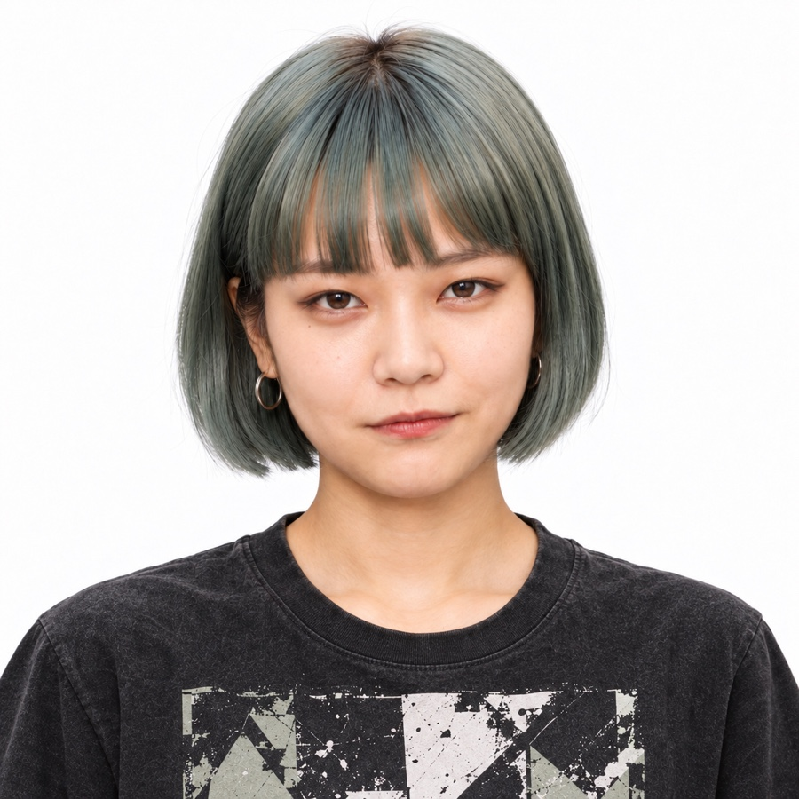
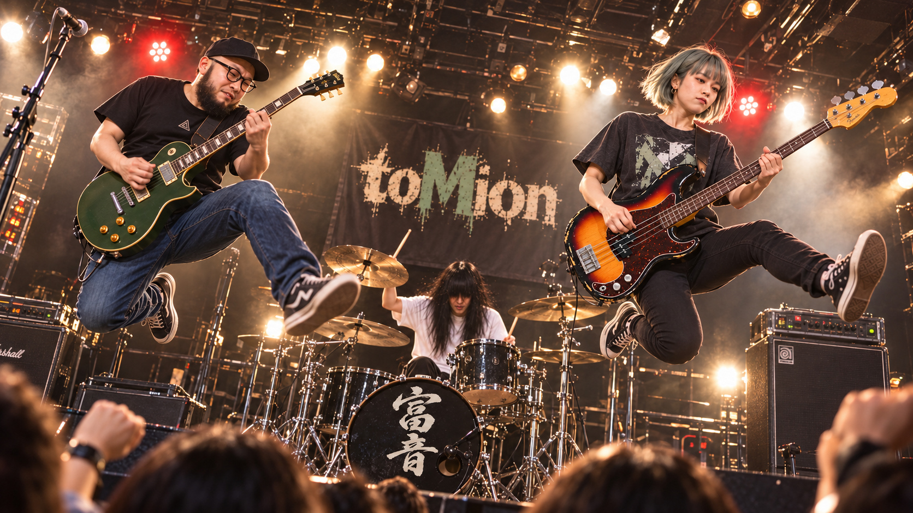
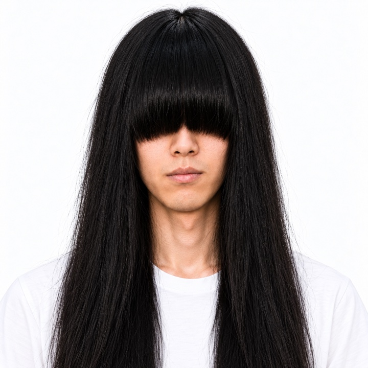

01Mion
MAIN VOCAL / BASS歌声で曲の表情をつくり、ベースでバンドを支えるメインボーカル。

OFFICIAL AI BAND WEBSITE
TWO VOICES. THREE SOULS.
歌が重なる。
ビートが走り出す。
toMionは、メインボーカル・ベースのMion、ギター・ボーカルのtomio、ドラム・コーラスのryoによる3ピースAIバンド。
ふたつの歌声が重なり、メロディーとリズムが駆け抜ける。耳に残るフレーズと、思わず身体が動くサウンドを届けます。
楽曲からMV、ライブビジュアルまで。音楽と映像で、toMionの世界を広げています。
MEET THE MEMBERS3人の個性が、ひとつのサウンドに。

01歌声で曲の表情をつくり、ベースでバンドを支えるメインボーカル。
Mionと掛け合うボーカルと、勢いのあるギターで曲を動かす。

03ドラムで曲を走らせ、コーラスで歌声を支える。
toMionの楽曲・MV・ライブビジュアルは、クリエイターのトミオがAIを活用して制作しています。一曲ごとの表情を、歌と映像の両方から届けます。
新曲やMVの公開情報を、公式SNSで。
お問い合わせはXのプロフィールへ。